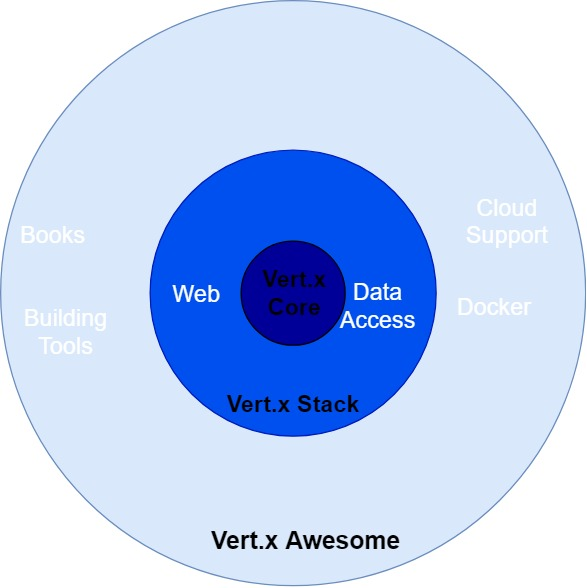
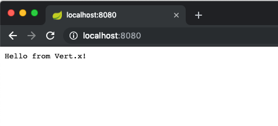
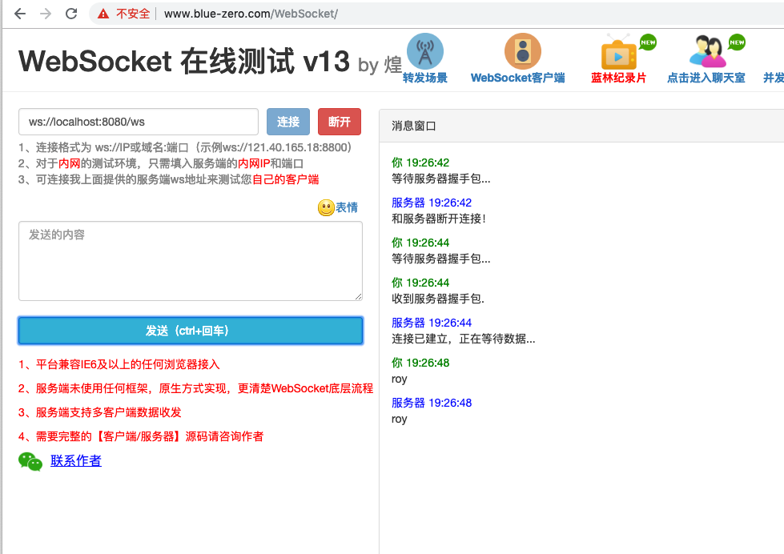
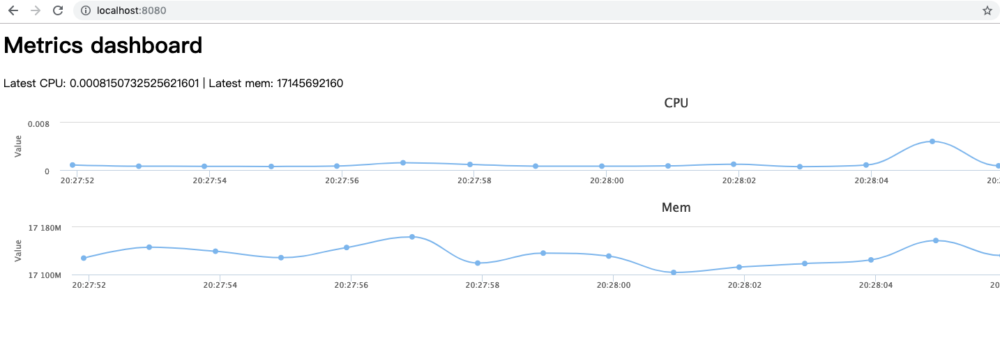

- AQS 万字图文全面解析.md.html
- Docker 镜像构建原理及源码分析.md.html
- ElasticSearch 小白从入门到精通.md.html
- JVM CPU Profiler技术原理及源码深度解析.md.html
- JVM 垃圾收集器.md.html
- JVM 面试的 30 个知识点.md.html
- Java IO 体系、线程模型大总结.md.html
- Java NIO浅析.md.html
- Java 面试题集锦（网络篇）.md.html
- Java-直接内存 DirectMemory 详解.md.html
- Java中9种常见的CMS GC问题分析与解决（上）.md.html
- Java中9种常见的CMS GC问题分析与解决（下）.md.html
- Java中的SPI.md.html
- Java中的ThreadLocal.md.html
- Java线程池实现原理及其在美团业务中的实践.md.html
- Java魔法类：Unsafe应用解析.md.html
- Kafka 源码阅读笔记.md.html
- Kafka、ActiveMQ、RabbitMQ、RocketMQ 区别以及高可用原理.md.html
- MySQL · 引擎特性 · InnoDB Buffer Pool.md.html
- MySQL · 引擎特性 · InnoDB IO子系统.md.html
- MySQL · 引擎特性 · InnoDB 事务系统.md.html
- MySQL · 引擎特性 · InnoDB 同步机制.md.html
- MySQL · 引擎特性 · InnoDB 数据页解析.md.html
- MySQL · 引擎特性 · InnoDB崩溃恢复.md.html
- MySQL · 引擎特性 · 临时表那些事儿.md.html
- MySQL 主从复制 半同步复制.md.html
- MySQL 主从复制 基于GTID复制.md.html
- MySQL 主从复制.md.html
- MySQL 事务日志(redo log和undo log).md.html
- MySQL 亿级别数据迁移实战代码分享.md.html
- MySQL 从一条数据说起-InnoDB行存储数据结构.md.html
- MySQL 地基基础：事务和锁的面纱.md.html
- MySQL 地基基础：数据字典.md.html
- MySQL 地基基础：数据库字符集.md.html
- MySQL 性能优化：碎片整理.md.html
- MySQL 故障诊断：一个 ALTER TALBE 执行了很久，你慌不慌？.md.html
- MySQL 故障诊断：如何在日志中轻松定位大事务.md.html
- MySQL 故障诊断：教你快速定位加锁的 SQL.md.html
- MySQL 日志详解.md.html
- MySQL 的半同步是什么？.md.html
- MySQL中的事务和MVCC.md.html
- MySQL事务_事务隔离级别详解.md.html
- MySQL优化：优化 select count().md.html
- MySQL共享锁、排他锁、悲观锁、乐观锁.md.html
- MySQL的MVCC（多版本并发控制）.md.html
- QingStor 对象存储架构设计及最佳实践.md.html
- RocketMQ 面试题集锦.md.html
- SnowFlake 雪花算法生成分布式 ID.md.html
- Spring Boot 2.x 结合 k8s 实现分布式微服务架构.md.html
- Spring Boot 教程：如何开发一个 starter.md.html
- Spring MVC 原理.md.html
- Spring MyBatis和Spring整合的奥秘.md.html
- Spring 帮助你更好的理解Spring循环依赖.md.html
- Spring 循环依赖及解决方式.md.html
- Spring中眼花缭乱的BeanDefinition.md.html
- Vert.x 基础入门.md.html
- eBay 的 Elasticsearch 性能调优实践.md.html
- 不可不说的Java“锁”事.md.html
- 互联网并发限流实战.md.html
- 从ReentrantLock的实现看AQS的原理及应用.md.html
- 从SpringCloud开始，聊微服务架构.md.html
- 全面了解 JDK 线程池实现原理.md.html
- 分布式一致性理论与算法.md.html
- 分布式一致性算法 Raft.md.html
- 分布式唯一 ID 解析.md.html
- 分布式链路追踪：集群管理设计.md.html
- 动态代理种类及原理，你知道多少？.md.html
- 响应式架构与 RxJava 在有赞零售的实践.md.html
- 大数据算法——布隆过滤器.md.html
- 如何优雅地记录操作日志？.md.html
- 如何设计一个亿级消息量的 IM 系统.md.html
- 异步网络模型.md.html
- 当我们在讨论CQRS时，我们在讨论些神马？.md.html
- 彻底理解 MySQL 的索引机制.md.html
- 最全的 116 道 Redis 面试题解答.md.html
- 有赞权限系统(SAM).md.html
- 有赞零售中台建设方法的探索与实践.md.html
- 服务注册与发现原理剖析（Eureka、Zookeeper、Nacos）.md.html
- 深入浅出Cache.md.html
- 深入理解 MySQL 底层实现.md.html
- 漫画讲解 git rebase VS git merge.md.html
- 生成浏览器唯一稳定 ID 的探索.md.html
- 缓存 如何保证缓存与数据库的双写一致性？.md.html
- 网易严选怎么做全链路监控的？.md.html
- 美团万亿级 KV 存储架构与实践.md.html
- 美团点评Kubernetes集群管理实践.md.html
- 美团百亿规模API网关服务Shepherd的设计与实现.md.html
- 解读《阿里巴巴 Java 开发手册》背后的思考.md.html
- 认识 MySQL 和 Redis 的数据一致性问题.md.html
- 进阶：Dockerfile 高阶使用指南及镜像优化.md.html
- 铁总在用的高性能分布式缓存计算框架 Geode.md.html
- 阿里云PolarDB及其共享存储PolarFS技术实现分析（上）.md.html
- 阿里云PolarDB及其共享存储PolarFS技术实现分析（下）.md.html
- 面试最常被问的 Java 后端题.md.html
- 领域驱动设计在互联网业务开发中的实践.md.html
- 领域驱动设计的菱形对称架构.md.html
- 高效构建 Docker 镜像的最佳实践.md.html
Vert.x 基础入门
Vert.x 是一个轻量级、高性能、模块化的响应式编程技术，天生自带异步、分布式属性，简约而不简单，是目前实现微服务和 Serverless 架构的最热门框架之一。
2011 年，在 VMware 工作的 Tim Fox 开始开发 Vert.x。2014 年 5 月，Vert.x 在 JAX 创新奖中荣获“最具创新性的 Java 技术”奖。经过 8 年的发展，Vert.x 已经成长为一个功能全面的响应式编程框架，并且拥有了一个较为丰富的生态圈。通过使用 Vert.x 可以快速开发出高性能的 HTTP 服务和 WebSocket 服务，也可以作为底层网络通信框架减少多线程编程的复杂性。
工程师对于性能的追求是无止境的，而响应式编程是提升系统性能的一大利器。追求极致的你是否愿意跟我一起来一探究竟呢？
本文将带你一起入门 Vert.x ，通过 Vert.x 是什么来理解这个工具的框架，然后再通过主要功能探究来学习主要功能，最后通过一个小实战项目来巩固所学的知识。文中提到的代码都可以通过 https://github.com/roytrack/vertx-gitchat 来下载。下面我们开始吧~
Vert.x 是什么
在 Vert.x 的官网上 Vert.x 有这么一段话说明了它是什么。
Eclipse Vert.x is a tool-kit for building reactive applications on the JVM.
翻译过来就是：Vert.x 是构建基于 JVM 的反应式应用的工具包。 首先，它是一个全家桶式的工具包，既可以用简单的代码来创建一个高性能的网络服务器，也就是可以作为类似于 Apache 的 httpclient 来使用，提供 HTTP client 、DNS client 等一系列工具，同时提供各类好用的功能集合：
- 数据访问：提供 MongoDB、JDBC、Redis 等客户端；
- 集成其他框架：邮件客户端、JCA 适配器、RabbitMQ 和 Kafka 客户端、Consul 客户端、MQTT 服务器；
- 事件总线桥接：Camel 和 TCP 的事件总线
- 登录验证集成：JDBC 验证、JWT 验证、Shiro 验证、MongoDB 验证、OAuth2 验证
- 反应式编程：Vert.x Rx、反应式流处理、Vert.x Sync
- 微服务支持：服务发现、配置管理、熔断器
- 开发运维：shell 和 docker 的支持、度量度量工具和包管理工具
- 异步测试支持：Vert.x Unit
- 集群支持：Hazelcast、Infinispan、Apache Ignite、Apache Zookeeper
- 云支持：OpenShift Cartridge
其次，它可以用来构建反应式应用的，在其官网右上角有反应式宣言，声明了反应式系统的特质：
- 即时响应性
- 回弹性
- 弹性
- 消息驱动
文中链接有对应宣言的翻译解释链接，限于篇幅，就不在此探讨了。
框架定位
Vert.x 的定位非常灵活。
简单的网络工具、复杂的 web 应用程序、 HTTP / REST 微服务、海量事件处理、完整的后端消息总线应用程序都可以用 Vert.x 来做。
Vert.x 并不是一个严格意义上的框架或者容器，框架开发者不会告诉你一条“正确”的道路去写一个应用，而是给你了很多强有力的工具，让你去按照自己希望的方式去构建应用。
例如很多人在学习 Vert.x 的时候认为 Verticle 必不可少，其实可以只去用它的 HTTP client，而不用其他的，这也是可以的。
另外一个体现就是不强制要求只用 Vert.x 提供的功能，而是可以与其他类库灵活的组合使用，例如 Spring 的 IOC 容器就可以灵活搭配起来。
框架功能简介
Vert.x 生态系统是由一系列模块组成的，一部分是官方维护，一部分是志愿者维护。具体如下图结构：

Vert.x Core 作为最核心部分，提供了以下功能：
- TCP 客户端和服务器；
- HTTP 客户端和服务器，并且支持 WebSocket ，这部分我们会在下面常用两个协议 ( HTTP & WebSocket ) 进一步展开讲；
- 事件总线，用来进行信息传递，实质是一种基于 TCP 连接的消息队列，支持点对点和发布订阅两种机制；
- 共享数据,通过本地的 map 结构和集群级别的分布式 map；
- 定时器和延迟操作，通过 vertx.setPeriodic 实现周期定时执行， vertx.setTimer 来实现一次性的调用（延时操作）；
- 装载、卸载部署单元；
- UDP 数据报文；
- DNS 客户端；
- 访问文件系统；
- 高可用；
- 集群化。
Vert.x Core 只包含一个非常轻量级的 jar 包，里面有以上的核心功能。
Vert.x Web 基于 Vert.x Core，提供了一系列更丰富的功能以便更容易地开发实际的 Web 应用。它继承了 Vert.x 2.x 里的 Yoke 的特点，灵感来自于 Node.js 的框架 Express 和 Ruby 的框架 Sinatra 等等。Vert.x Web 的设计是强大的，非侵入式的，并且是完全可插拔的。Vert.x Web 非常适合编写 RESTful HTTP 微服务。
Vert.x Stack 包含一系列提供鉴权、网络、数据访问等的官方扩展 jar 包。
而 Vert.x Awesome 则包含了官方和非官方提供的各种扩展，例如各种书籍、构建工具、云支持、容器支持等。
下面放上一个一文全的地址: https://github.com/vert-x3/vertx-awesome ,可以体会一下 Vert.x 的生态规模。
黄金法则
Vert.x 中有一个黄金法则，就是不要阻塞 Event Loop 。
这个黄金法则设立的原因我们来一起探索一下。
大部分 Vert.x 的 API 都是事件驱动的,通过事件来调用起对应的 handler,这样就可以解耦，进行异步操作。
例如下面的代码示例，当有 HTTP 请求过来的时候，调用这个 handler 来返回响应信息：
server.requestHandler(request -> {
// This handler will be called every time an HTTP request is received at the server
request.response().end("hello world!");
});
相比于以前的处理，就是不会再阻塞处理，而是通过事件驱动，让 Vert.x 自己主动调用。
这样引入的优势是，Vert.x 可以通过少量的线程，处理大量的并发事件。如果这里面并发事件同时出现了与线程数相同的阻塞操作，例如读取文件，那么所有线程都被阻塞，整个程序就被挂起、拒绝服务了。
在大部分情况下，Vert.x 在一个线程里调用对应的 handlers，这个线程就叫做一个 Event Loop 。

图片来自 Vert.x官网：https://vertx.io/docs/guide-for-java-devs/
Vert.x 保证自己的 API 是非阻塞的,并且不会阻塞 Event Loop，但是但是无法控制你自己的代码是否是阻塞的,所以会对这部分进行监控，并通过日志警告你。我们来造一个阻塞操作看看：
public class BlockWarningDemo extends AbstractVerticle {
@Override
public void start() throws Exception {
Thread.sleep(3000L);
}
public static void main(String[] args) {
Vertx vertx = Vertx.vertx();
BlockWarningDemo blockWarningDemo = new BlockWarningDemo();
vertx.deployVerticle(blockWarningDemo);
vertx.close();
}
}
运行上面的代码就可以得到一个阻塞被警告的日志：
三月 03, 2019 11:08:06 上午 io.vertx.core.impl.BlockedThreadChecker
警告: Thread Thread[vert.x-eventloop-thread-0,5,main] has been blocked for 2847 ms, time limit is 2000 ms
默认 Event Loop 的线程执行时间是 2 秒，上面的代码让线程睡了三秒就直接被检查出来了。与此类似的还有以下的阻塞操作：
- 等待锁；
- 等待互斥锁或者同步代码块；
- 数据库长时间查询；
- 进行消耗很多时间的大量计算；
- 文件句柄的获取与读写。
那么这些阻塞的操作我们怎么做呢？使用 vertx.executeBlocking 或者使用一类新的 Verticle ， 叫做 Worker Verticle 。
根本上就是让这些阻塞操作在一组内部或者自定义的线程池上执行，而不要在处理事件的 Event Loop 操作。待处理完毕后，再通过 future 对应的 handler 来回调 Event Loop 进行后续处理。
通过这一部分的讲解，我们知道了 Vert.x 是构建基于 JVM 的反应式应用的工具包，提供了一批可用于 TCP 、 UDP 、 HTTP 、 DNS 的工具集，具有较好的开源生态，并且对其黄金法则进行了探索与实战。
主要功能探究
Vert.x 提供了很多功能，我们学习起来可能会有点选择困难症，下面我挑了几个比较核心的，能尽快形成生产力的功能来进行探索。
部署单元 ( Verticle )
在学习 Vert.x 的部署单元之前，我们先来理解一下 Actor 模型。
你可以将 Actor 当作是一群人，他们互相之间不会面对面地交流，而只是通过邮件的方式进行沟通。
Verticle 可以近似的看做 Actor 模型中的 actor （之所以说近似，因为各个 Verticle 还是可以通过共享 map 来通信。）。不同的 verticle 实体部署在一个 Vert.x 实例中，通过 Event Bus 来进行消息传递。
定义自己的 Verticle 需要扩展 AbstractVerticle ，逻辑可以写在重载的不带参数的 start 、 stop 方法中，表示在 Verticle 部署后，卸载后执行的逻辑。 如果重载带参数 Future 的 start 、 stop 方法，则表示在部署或者卸载 Verticle 前要做一些逻辑，做完后将 future 设置为成功或者失败，标志着 Verticle 相应动作成功或失败。
Verticle 分为三类：
- 标准 Verticle ，在 Event Loop 上执行；
- 工作 Verticle ，在工作线程池运行。一个实例不会同时在多于一个线程上执行；
- 多线程工作 Verticle ，在工作线程池运行，是高阶特性，一个实例不会同时在多于一个线程上执行，但是实例自身可以开启多个线程。
Verticle 最大的特色就是它的线程隔离性。 在启动的时候， Verticle 就被分配给了创建和 start 方法调用的 Event Loop 了。当调用一个使用 core API 的 handler 的方法的时候， Vert.x 保证这些 handler 将在同一个 Event Loop 上执行的。
也就是说在 Verticle 实例的代码保证是在同一个 Event Loop 执行。
上文中的 BlockWarningDemo 就是一个标准 Verticle 。如果要转化为工作 Verticle ，在部署的时候进行以下配置：
DeploymentOptions options = new DeploymentOptions().setWorker(true);
BlockWarningDemo blockWarningDemo = new BlockWarningDemo();
vertx.deployVerticle(blockWarningDemo, options);
这样这个 Verticle 就不在 Event Loop 上分配了，转而分配到 Vert.x 的内部工作线程池上。

图片来自 Vert.x官网：https://vertx.io/docs/guide-for-java-devs/
链式 API 与异步 ( Fluent API & Asynchronous )
链式操作和异步处理，是始终贯穿 Vert.x API 中的两个通用模式。我们在编写程序的时候更期望使用流畅的 API ，一路处理下来即可。例如使用 Builder 可以更方便的获取新的对象：
package com.roytrack.fluent;
import lombok.Builder;
import lombok.ToString;
@Builder
@ToString
public class LombokDemo {
private final String userName;
private final Integer age;
public static void main(String[] args) {
LombokDemo demo = LombokDemo.builder().userName("roy").age(30).build();
System.out.println(demo);
}
}
亦或者是 Java 8 中引入的流处理 API ，更方便的进行流处理：
package com.roytrack.fluent;
import java.util.ArrayList;
import java.util.List;
public class Java8Demo {
public static void main(String[] args) {
List<Integer> list = new ArrayList();
for (int i = 0; i < 100; i++) {
list.add(i);
}
int result = list.stream().map(v -> v + 1).reduce(0, (v1, v2) -> v1 + v2);
System.out.println(result);
}
}
Vert.x 也大量的使用了类似的 API 设计，下面这个例子展示了它灵活的 Json 构造和处理：
package com.roytrack.fluent;
import io.vertx.core.json.JsonObject;
public class VertxDemo {
public static void main(String[] args) {
JsonObject jsonObject = new JsonObject().put("name", "roy").put("age", "30");
System.out.println(jsonObject.toString());
}
}
对于异步处理，大部分是通过设置 handler ，让 Vert.x 自己根据响应去调用，举例一个 request 的返回如下：
vertx.createHttpServer().requestHandler(req -> {
req.response()
.putHeader("content-type", "text/plain")
.end("Hello from Vert.x!");
});
配合使用异步处理和链式 API 操作，我们既可以获得代码的简洁性，也可以得到分布式下的高性能。
常用两个协议 ( HTTP & WebSocket )
下面我们来写一个最小的 HTTP 服务：
package com.roytrack.http;
import io.vertx.core.Vertx;
import io.vertx.core.http.HttpServer;
public class MinimalHttpServer {
public static void main(String[] args) {
Vertx vertx = Vertx.vertx();
//创建 httpServer
HttpServer server = vertx.createHttpServer().requestHandler(req -> {
req.response()
.putHeader("content-type", "text/plain")
.end("Hello from Vert.x!");
});
//指定监听端口
server.listen(8080, res -> {
if (res.succeeded()) {
System.out.println("Begin http server !");
} else {
System.out.println("Http server occured error " + res.cause());
}
});
}
}
访问后获得结果：

如果想同时构建 HTTP 和 WebSocket 服务，处理起来也很简单，代码如下：
package com.roytrack.http;
import io.vertx.core.Vertx;
public class HttpAndWsServer {
public static void main(String[] args) {
Vertx vertx = Vertx.vertx();
//创建 httpServer
vertx.createHttpServer()
//增加 websocket服务
.websocketHandler(ws -> {
System.out.println("path is " + ws.path());
if (!ws.path().equals("/ws")) {
ws.reject();
}
ws.textMessageHandler(msg -> {
ws.writeTextMessage(msg);
});
})
//增加 http服务
.requestHandler(req -> {
req.response()
.putHeader("content-type", "text/plain")
.end("Hello from Vert.x!");
})
//指定监听端口
.listen(8080, res -> {
if (res.succeeded()) {
System.out.println("Begin http server !");
} else {
System.out.println("Http server occured error " + res.cause());
}
});
}
}
通过访问 WebSocket 返回如下：
 同时，访问 HTTP 也不受影响，因为 WebSocket 协议的升级包也是 HTTP 协议。
另外如果使用 Verticle 多实例部署，也可以共用一个端口，这样一个 Verticle 停用或者卸载了，也不影响其他 Verticle 的服务，体现了反应式宣言中的回弹性。
多语言编程 ( Polyglot )
Vert.x 不止支持 Java，还官方支持 Ceylon 、 Grovvy 、 JavaScript 、Ruby 、 Scala 、 Kotlin ，贡献者支持 Python 、 TypeScript 。
最快体验多语言特性，莫过于安装一下 Vert.x 的命令行工具，下面是两种安装方式。
通过 Node 安装 vertx ，如果是 windows 系统，可以进入到对应 module 中执行 vertx.bat：
npm install vertx3-full
或者MacOS 通过 Homebrew 安装 vertx ：
brew install vert.x
安装后就可以执行 vertx 命令了。
编写一个 js 脚本 my-verticle.js 如下：
var server = vertx.createHttpServer();
server.requestHandler(function (request) {
request.response().end("Hello world");
});
server.listen(8080);
通过执行以下命令，就可以启动一个 httpServer 返回 Hello world 了。
vertx run my-verticle.js
项目实战 ：构建一个资源管理器
经过以上的学习，我们对 Vert.x 的主要功能有一些了解了，下面我们来实战一个项目。
需求：调用 MXBean 来获取 cpu 和内存，然后通过 eventbus 发送。另外一个接收 eventbus ，发送到页面进行展现。 最终效果如下图：
 最终完成的项目地址为：https://github.com/roytrack/vertx-gitchat
构建 Agent
com.roytrack.dashboard.Agent 核心代码如下：
@Override
public void start() {
OperatingSystemMXBean systemMBean = ManagementFactory.getPlatformMXBean(OperatingSystemMXBean.class);
String pid = UUID.randomUUID().toString();
vertx.setPeriodic(1000, id -> {
JsonObject metrics = new JsonObject();
metrics.put("CPU", systemMBean.getProcessCpuLoad());
metrics.put("Mem", systemMBean.getTotalPhysicalMemorySize() - systemMBean.getFreePhysicalMemorySize());
vertx.eventBus().publish("metrics", new JsonObject().put(pid, metrics));
});
}
获取系统的 MBean ，设置每秒执行一次，将相关参数放入到 JsonObject ，然后通过 EventBus 发送到 metrics 这个地址。
构建 Server
com.roytrack.dashboard.Server 核心代码如下：
@Override
public void start() {
Router router = Router.router(vertx);
// The web server handler
router.route().handler(StaticHandler.create().setCachingEnabled(false));
router.get("/dashboard").handler(ctx -> {
ctx.response()
.putHeader("Content-Type", "application/json")
.end(dashboard.encode());
});
vertx.eventBus().<JsonObject>consumer("metrics").handler(msg -> {
JsonObject metrics = msg.body();
dashboard.mergeIn(metrics);
});
vertx.createHttpServer()
.requestHandler(router::accept)
.listen(8080);
}
StaticHandler 会去找 webroot 的静态资源，直接对外提供服务。
/dashboard 路径每次返回最新的数据。
消费地址为 metrics 的 EventBus ，来更新 Json 对象 dashboard 的内容。
最后创建 httpServer，监听 8080 端口即可。
项目代码下载下来的同学，会发现给出的项目代码还使用了 hazelcast 作为集群发现的方式，可以作为一个进阶增强进行自学，有不懂的地方我们在读者圈继续交流。
学习资料
- 我们可以通过 Vert.x 的官方文档系统学习它，地址为：https://vertx.io/docs/
- 同时github上有人翻译了中文版：https://vertxchina.github.io/vertx-translation-chinese/
- 官网同时有一本电子书《使用Java构建响应式微服务》，大家可以学习参考：https://developers.redhat.com/promotions/building-reactive-microservices-in-java/
- Vert.x生态的各种信息和例子，都可以从这个项目里找到：https://github.com/vert-x3/vertx-awesome